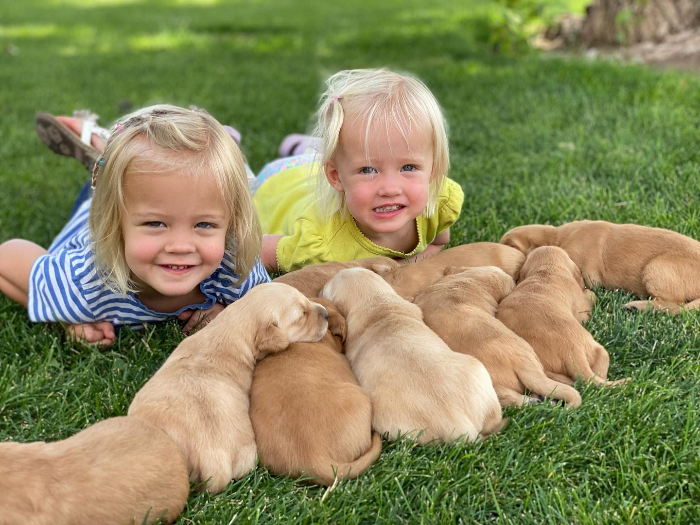

Episode 6 · June 01, 2023 · 2433
The age old question of "How to choose a puppy?"

About This Episode
In this episode we go over how to choose a puppy! This is super important when it comes to starting out on the right path. In this episode we cover all the main points that we feel are important to getting a good bird dog. Hope you enjoy this episode. Please
Questions about the training topics in this episode? Tyce works with bird dog owners and hunters through Utah Bird Dog Training. Reach out to work with him directly.
Resources & Links
- Utah Bird Dog Training — Tyce's professional training services.
Transcript
Full transcript for Episode 6: The age old question of "How to choose a puppy?".
Tyce
Hello everyone. Welcome to the Bird Dog Podcast. My name is Ty Erickson and I will be your host. And, thanks for tuning in and listening to the show today. today I wanted to talk about a topic that's really important as I was trying to decide on some things to talk about and maybe some information to share with you guys.
I thought it would be good. To talk about choosing a puppy. this, this information I'm gonna share with you is all my my personal opinion, my personal experience in choosing puppies. And so hopefully, this will help you guys out. I would say the number one thing, I would go off when choosing a puppy to start is I would first look at the pedigree.
I would look at the papers, of the parents to see what that dog is genetically made of. A lot of people think, oh, I got a purebred lab, or I gotta purebred this, or I gotta purebred that. If I send it to a trainer, it's gonna turn into a good dog. Or because it's a purebred, it has some of these, genetic, has enough genetic traits to be a good hunting dog.
Now, to a point that can be true a little bit, but it's not always true. Example, let's talk about the Labrador, the Labrador. Retriever is the country's most, liked dog. I think the Labrador, there's more of those in homes than any dog out there.
And they're a great dog. They're very trainable, they're kind, they're gentle, they're, smart, and make a great family dog. You can trust them with young kids generally. And, but even inside that spectrum, even inside the spectrum of the Labrador, there's.
There's a wide range. There's show labs, there's filled labs, there's this lab and that lab. And so, when you look at, getting a puppy, regardless of what breed you're getting, I would look at paper first and look for either hunt test titles or field trial titles, or whatever titles you can see. If you look at that three or four generation pedigree, of each of the parents when you're doing your puppy shopping and there just is the registered names of the parents, and you don't see any titles around those names, then you're gonna have a little more work, cut out for you in my book. what you're gonna look for generally, the, the hunt test titles will come after.
The dog's name. So if you have, if there's a registered name, let's say Daisy in the Marsh, is one of the dog's names in the pedigree, just made that up. After that name you're gonna see a jh, an s, SH, or an mh. And JH stands for Junior Hunter.
SH stands for Senior Hunter, and MH stands for Master Hunter. And this is an A K C. Pedigree, you're looking at the American Kennel Club. There's also HRC titles, hunter Retriever Club, U K C, United Kennel Club.
But the most recognized, club is the American Kennel Club, an a K C registered dog, or a purebred dog. So when you're looking at those, three or four generation pedigrees, That, those, dogs have, you're gonna wanna look at titles. I would try to have the more titles, the better and why? The why is that is because it's proving that those parents or those ancestors, have reached a certain level of training when it comes to hunt testing.
And that's important cuz that shows one trainability, it shows the dog has drive. It shows that the dog can do things to a certain level. So if you don't have any hunt test titles or field trial titles, you don't know. I mean, someone could say you just don't know.
You look at the pedigree, it's just names of dogs. You don't know if they were some big lazy lab or, or whatever it may be, but, The more titles you can have just shows that you have generations basically of athletes that have proven themselves to a certain level. And so when you have these generations of athletes stacked together that blood, there's a high chance that that puppy is also gonna be an athlete. if you have example people, if you have two humans and both of 'em are six, five, Super fit, super athletic, all-star on the basketball team, football team, whatever it may be. There's a good chance their kids are gonna have the same genetic code.
They're gonna be around that same build, they're gonna be athletic. They may even have the, that desire that the parents pass down to play those sports. And so we're looking for that same thing in the dog world. So just cuz you see it's a purebred dog, that does not mean that it's necessarily gonna be a good hunting dog.
Other things you're gonna look for are, you can look for fc afc, nfc n afc, these are all field trial titles. A field trial is a competition and so the best dogs win first, second, third, fourth place and they're awarded points and then received those titles off points. And so when you're looking at these titles, just realize field trial or hunt test, titles are a good thing. It just proves that.
The grandparents, the great-grandparents, the great-grandparents were, were good dogs. And so it's just gonna increase your chances. Now, there is an occasion, you breed two really nice dogs together and personalities mix and you get some weird pups and they generally will stop drive. They could just kind of have some weird personalities.
But again, if you err on looking at hunt test or field trial, lines, that's definitely gonna, that's going to increase your odds of having a good dog just because you're getting a dog outta generation of athletes. Let's say you're looking at a pedigree. You're looking at a puppy and in the pedigree there's no titles or very little titles. The next best thing you're gonna want to do is look at the parents.
Look at both the parents, and this can be deceiving. Ideally I would try to get some videos, because, videos you can see the parents working. So ideally the video is the dog retrieving or maybe jumping in the water, or ideally kind of retrieving just their personality in, in general. if you can see them in person, that's even better. At least one of the parents, if you go.
There and the female of the litter just seems like she's really shy or scared or just annoying. She's barking, going like crazy. Well, your pup may be like that dog and you're trying to, again, to get a good pup that's, it's either gonna be, it's gonna be like the parents, just like us. We're usually a little bit like mom or dad or a combination.
If you look at dad and he's really nervous or super crazy, hyper barking all over the place, well, if you want a super hyper dog that's maybe vocal, then maybe that's the choice for you. But if you go and both parents have a good nature to 'em, they, seem happy to greet you, they love to retrieve. If you're looking for a dog with a little more of an off switch, Then you're gonna want parents that seem to have that. But also if you're looking at off switches, make sure they do have enough drive.
I heard someone, I think it was on a, a different podcast I was listened to. They said basically get a dog with as much drive that you can handle. And I would agree with that. You're gonna want a dog that has as much drive as you can get without kind of, that dog.
You know, driving you nuts type thing. if you do get a dog that's out of maybe a lot of field trial lines, the, some of those dogs tend to be bred, pretty hot. And so they tend to have more energy and some of 'em don't have as much of an off switch. So if you do look at dogs with FC titles, AFCs, nfcs, they'll stand for fielded trial champion. Amateur Field Trial champion, national Field Trial Champion, National Amateur Field Trial Champion.
If you're looking, you see a lot of those, you're gonna wanna look at the parents and look at their drive. Maybe their bred a little too hot. If you're a guy that hunts two, three times a year, that might be a little too much for you. If you're looking for a dog that's, you're gonna hunt, you hunt once a week, maybe two, three times a week, then that's a dog that might be, Fun to have, dog with a lot of energy.
You definitely want to control it. So you're gonna want to get good obedience done. So that energy is controlled. Otherwise, you're just gonna have an out outta control animal and it's not gonna be fun for you to have.
So that would be the next step is to look at both parents. Ideally get videos of 'em if you can't see 'em in person. Let's see. You're putting a deposit down.
This dog lives outta state. Just have 'em send some videos of the dog working so you can get a gauge or fill for. The puppies parents, get a feel for their personalities. Cuz pictures don't always explain thing.
You can have a dog that's average or even below average, and they can stick him up there with a bunch of ducks sitting in front of 'em. And the dog looks like he's. Awesome. But he is really not that awesome.
And then you could have another dog that's a master hunter and he is laying on the lawn and it's hot outside and his tongue's hanging out and you're like, that looks like the laziest dog. Or He doesn't look awesome at all. So a lot of it can be marketing when people are selling pups. You know, you do want to paint the dream, when you do.
Sell some pups. You do want pictures and videos and stuff like that, or good pictures. But the videos really helped to, show people, the potential of what your puppy could be. So if you look at both parents and both parents, man, they got great retrieve, drive great personalities.
Then yeah, the, they might be a pup, even though it doesn't have much in its pedigree, might be a good dog. Something else you wanna look at when you're, shopping around. Let's see. We covered, Pedigrees looking at parents.
Oh, another thing you want to think about is trainability. So when you get a dog that tends to look good on paper, has those titles and stuff like that we're talking about, that also lends to trainability. Some dogs when it comes to training, respond good to pressure or respond good to training or the things you're working on, they train faster. Because it really, they're just more of an intelligent animal again, cuz you're getting these athletes that are passed down from generation to generation and they're just really smart animals.
They've proven themselves. And so you tend to get that same thing, out of those puppies. So if you get a dog, that man, both parents look pretty good. They have good retrieve desire.
They say they hunt good stuff like that. The thing you don't know is how those dogs respond to pressure. If you put a slip lead or a choke chain or an e collar on that dog or whatever training tools you're using, those dogs may tend to balk under pressure. They might be softer than you thought.
They're just, their trainability isn't as good as other dogs, so, That's one thing that you generally get with a well-bred dog is, better trainability. I would say on average, most dogs, I tell my clients this, most dogs are about average. Most dogs with good training, you can have a good dog. That's a good well-bred dog.
And I would say even some of those dogs that maybe aren't as as well-bred, they're gonna be in that average range till maybe a little below average. Just depends. I've had some dogs, nothing. They're pedigrees and they're great dogs, but you definitely gamble more.
And when you buy that dog and your kids you bring it home and your kids love it. It's pretty hard to give up that dog, once it becomes part of the family. So do yourself a favor. Spend the time looking at pedigrees, looking at the parents.
Don't go out just one weekend, say, Hey, let's buy a pup unless you know what you're doing. So take the time, do your research, on those parents and you're gonna help yourself out. Next thing you want to look at with, pedigrees is health clearances. Okay.
So depending what breed you get, certain diseases tend to be, more prevalent in that breed of dog. And so if you just go buy a dog and it's akc. Registered and it's a purebred like we've been talking about, but no health clearances have been done. Again, you put more risk of that dog having issues down the road.
Some of the health clearances might be certified, hip certified elbows, certified eyes. E i c cnm, P r a, pro one, proc, pro two, prc D cnm, ncl. There's all these different diseases that certain breeds like Golden Retrievers or Labrador tend to have. And if you don't know what those are, I'm sure you can easily Google search.
What diseases does this breeded dog tend to have, and what should they be tested for? And then, There's generally a, a certain group of diseases that are usually tested for a certain breed of dog, and you're gonna want to go to that breeder and say, Hey, have you tested your dog on these things? I would say the very least is you're gonna want to have those dogs, their hips, Their elbows in the eyes of both parents need to be checked out. When it comes to hips, you're looking for generally a good or an excellent rating.
This is through the Orthopedic Foundation of Animals. The o ffa, they are the ones that certify 'em. The dog needs to be at least two years old to to have those hips certified. And also the elbows, the elbows are going to, you want a normal rating.
You don't want anything that's dysplastic, that is dysplasia. And also the eyes need to be clear. And so if the eyes aren't clear, the elbows aren't normal and your hips aren't good or excellent, then I would probably steer away, from getting a pup out of that litter. Now, the offa, the Orthopedic Foundation of animals, they will say if a dog has fair hips, But comes from an a bloodline of good and excellent dogs and that dog with fair hips is bred to maybe say an excellent dog.
They say that they recommend, those are still good puppies. I would kind of leave that up to you. So your best bet again is to get a dog that's out of, good or excellent hips, normal elbows and eyes clear. And then as many of the genetic traits you're looking for, either, clear or carrier.
Okay, so let's talk about that. when you're looking at, let's say, eic, energy induced collapse, EIC is a disease that can be found in labs. I'm not sure if it's in golden retrievers or all retrievers, but most common thing I know it's, in the Labrador. So eic, I've only seen it one time with my own eyes in real life. I've had a client dog in, It was running around, got its heart rate up, we're running some marks or something like that and the dog Austin looks like someone took like a baseball bat to its back end.
Had its front legs up and its back legs were kind of turned to the side and it was kind of dragging him and I, I was like, what the heck is going on here? I was freaking out and so I run and hurry and get the dogs put away. I put this dog and it's dog run for a minute, and then I come back and the dog's back up on its feet. And I'm like, what is going on here?
And, come find out. The dog had e i c and it was e iic positive or infected. And so this, the disease would actually show itself. Now, the dangerous thing about E I C is when your dog's swimming and let's say the disease presents itself and it can't use its back legs.
The dog could drown if you're out in, if it's out in some deep water I don't know if it happens real often. The water, I think it presents itself more when the dog kind of gets hot, and tends to present itself more on land. But. It could happen, just depends on how maybe strong that disease trait is in that dog.
A lot of people back in the day used to think it was like heat stroke, and so they'd get, the dog would be running, it'd be hot, and all of a sudden the dog would have this kind of collapsing going on and they'd get it cooled down. I kind of get back up on its feet and they're like, oh, I just got really hot and I had heat stroke. But a universe actually found out that it was, a disease. And so, You don't want your dog to have these things.
And so again, look at the parents and try to get a clear dog,, a dog without these diseases and the parents need to be tested or, or the parents before them need to be tested. If their parents, if the grandparents were clear, then the parents should be clear also. Now when I talk about clear or carrier, let's say you have one parent that has genetically been tested and the dad is clear and the mom is carrier. And so that mom she carries that gene as a carrier of that disease.
If the CY is clear, then the puppy then, then he's clear and there's no, there's no issues at all in his genes. And so if you breed a clear to a carrier, that's okay. Just realize the puppies are either gonna be clear or they're gonna be carrier. Now, if the breeder, does not, do the genetics on the puppies and find out which ones are clear or which ones are carriers.
That's okay. The only thing is if you go to breed that dog, be a male or a female, whatever you're doing with the dog. You need to make sure you do get the genetic testing to know if it's a clear or a carrier. If you, if you get a clear puppy, you breed it to a clear and all the puppies will be clear again.
If you get a puppy that's a carrier and you breed it to a carrier, which you don't want to do, the puppies will be partly clear. Partly, carriers and partly infected. And so that disease could show itself. And so you never want to breed a carrier to a carrier, on most diseases.
And generally you just wanna avoid it. We wanna better the breed. So you always wanna breed a carrier to a clear or a clear to a clear. So hopefully that makes sense on genetics.
So again, Kind of to recap, you don't wanna look at the, the pedigrees of the parents. You're gonna look for titles. I would say ideally, 25% of those dogs in that pedigree are titled if you just see one or two of those puppies or one or two of the, grandparents, great-grandparents, whatever, one or two dogs in that four generation pedigree, it's still not really a lot. But if you see a quarter of those dogs are kind of sprinkled throughout, Hey, maybe some of those dogs had great potential, but they just, the people weren't into hunt tests and didn't spend the time and money cuz it is an investment.
And so there's a good chance those dogs are still gonna be at least an, an average dog for at least a good dog. The next thing we can look at is looks. That's the kind of the thing I would look at last. So if you have a dog, that's okay.
On paper it looks good. Both parents, you like their personalities. They've proven themselves. Maybe they're titled health clearances have been done.
Then I would look at looks after that. I would look at, obviously you, you have, let's say you're looking at a Labrador. You have blacks, chocolates, yellows, silvers, whites, people start calling 'em ivory, kind of these extra colors to really. Try to set the dog apart and try to really sell 'em for more money is basically what they're doing.
Personally, I would stick, this is me talking, I would stick generally with your chocolates and your, blacks or your yellows. Those bri those colors have been around for a long time. And even though some of the other colors, like the silvers or the. Pure whites or whatever like that may be.
A lot of times people tend to breed those dogs for looks and not necessarily, skillset or health clearances but again, if you see a color that you really like, and let's say you're looking at a litter of silvers and both parents are senior hunters they've been titled, then There's a good chance, those dogs should still, be good dogs. I would look at again, colors. Last, next I would probably look at size. Males tend to be a little bigger than your females. they can tend, they tend to be a little more powerful.
And the females though, they tend to mature mentally a little faster than the males. I would say it's kind of similar to humans. I think the, the psychology behind it is if you had a coyote in the wild, that dog's gonna become a mother, at a younger age and mentally, more adapt. I feel like they just mature quicker mentally, as a female.
And males tend to be a little goofy, a little longer and don't really mature. Mentally into their bodies until they're two, three years old. And so that's kind of something to consider is, people say, what's better, a male or a female? Well, again, I would look at those things.
If you don't want puppies, you don't want to deal with heat cycles Then you could go with a male, but males will mark, they tend to lift their legs and pee on things where a female may squat is gonna squat on your lawn and you might have burn marks or stuff like that on your lawn. Then you might want to go. You know, with a male, he's gonna probably pee on the bushes now what I do, if I'm out and about and I see my dog pee on my lawn, I usually grab a hose and I'll spray it down. My wife likes gardening and we have dogs, but we like nice yards.
And so, we try to dilute that urine so you don't have those heavy burn spots. Now if your dog just runs around your backyard and it's a female, you're probably gonna have those burned spots. So again, let's go over males. They're gonna be a little bigger, generally a little more powerful.
They're gonna mark things. Males tend to fight other dogs more. Usually I'm male to male. Conflict is what I have personally seen and feel.
They tend to fight more. females, they are gonna be a little bit smaller. You're gonna have heat cycles unless you, Spay that dog, you're gonna have to deal with that and then they're gonna, ima mature mentally a little bit faster compared to the male both. I've had males that are super loving bond with you, super well. I've had females that are super loving bond with you, super well.
But then I've had both that are very independent minded, so I wouldn't as much go off that comes to personality-wise, but I would go off, those other characteristics. So anyhow, those are some things when you're looking at a puppy that you definitely, are gonna wanna look into.
All right, so, Okay, let's say now we've done our research, we have found a litter of pups. Both parents have great titles. The pedigrees look really good. They got all the health clearances done.
Maybe you've seen some videos and pictures and you're like, man, I would love a puppy out of, this breeding so, next thing I do is get a feel for the breeder, if you don't know, much about, dogs in general, maybe that breeder has, some skills that they would mind sharing with you when it comes to training or, or things like that. For example, we breed, labs and also hunting golden retrievers and so. I get to evaluate the dogs that we breed because I train them Being a trainer, that's one special thing is, I, train these dogs so I know their personalities. I know, what they're like in the field.
I know how they train. And So if I have a dog that let's say is real high drive, high energy, well generally, unless I'm trying to maybe breed that I don't want to breed that dog to the same high energy level. I might breed that male to a female that's more maybe level-headed. maybe a little lower level range. So I'm trying to find that dog with the good off switch on switch.
That's gonna fit most American families. They're gonna go still have a nice dog around the home, cuz I mean that dog's really gonna be around the house, you know? Heck, 95% of the time, probably 5% hunting. So we want a dog that's gonna really fit good in the home.
I'm a little prejudiced because I'm a trainer and we breed and so I know I get to evaluate the dogs. And then the cool thing is, do we get a lot of dogs back that we've bred for training? And so that's fun cuz then I get evaluate the pups and I train 'em and say, man, that litter, that breeding, knocked it outta the park. And for that female, if I find a a, a breeding that, It's awesome.
Then I'm just gonna re keep recreating that breeding breed, that female to that same male until she's done we're done breeding that dog. If I find a litter, I'm like, those are good, but not like amazing. Then I'll probably try another male. And so, I'll take my females and I don't generally have a lot of males on, on hand, because I, I always want to better the breed, so I'll breed I'll.
Typically breed my females to different males to just try to find really that best pairing that we can. And then again, it's fun because we get some of those pups back and we get to, and we get, evaluate 'em and train 'em and see what they're like. so that's something I would. It never hurts to recommend is get a dog, a litter from a trainer if he does breeding also on the side, because that they should know the parents really well. And especially if it's a repeat breeding and that trainer's worked with some of those pups, then you're gonna have real, a first a firsthand knowledge on, yeah, that's a, these are these kind of pups and he's gonna be able to give you that info and, and you can expect, a nice dog.
The next thing, if you get on the internet and say how to choose a puppy, let's say you go there and there's seven puppies in the litter and. Man, they all look cute. They all look good. How do you choose?
There's probably a thousand things on the internet that says, oh, you drag a hot dog around and the one with the best knows or whatever, that's the one you want. what I typically do is just look at their personalities. I do my best, evaluate their personalities. And if you want a dog that's, that's just, you're, let's say you're just kind of that average hunter guy. Then maybe middle of the road personality is gonna be kind of what you want.
If you have one that you know, he's running around and he's jumping on all the other puppies and biting on the ears, and you can tell, man, that's the alpha, he's the, he's the leader of the pack here. He's probably gonna grow up and continue those habits. He might be that one that kind of tries to bully other males or. If it's an alpha female bully, they're females and you might end up having more dog fights and stuff like that with that one.
So kind of be careful, a little bit on the alpha. If you don't think you're gonna be around a lot of dogs, your dog's gonna have a lot of good training you're gonna be able to have control on the animal. Then you could go with an alpha, or a dog that's showing a real strong personality. If you're, if there's one that tends to be real shy and timid, You know, that necessarily isn't a bad dog.
He might be, very bit able and easy to have around the house. I remember we had a litter of pups and there was one that kind of was that way, kind of seemed shy and timid and, we ended up selling 'em to a guy, back in Arkansas. And, he just left him with us, said, I want, I'll pick him up in a year. I'm gonna pay you for the training, train him up for me and just have a finished dog.
And so that's what we did. And that dog turned out to be a great dog. He was very, like I say, very bit able, still had tons of drive, and just a little more of a team player because he did have a little more of that. Softer side to him.
Now he did come out of really good blood lines and so that played a role in, if he had a dog, maybe not of the best blood lines, and then he was really shy and timid. That could be a little more of a red flag. But, I took that dog on its first couple hunts, out of training and he did awesome. And I know he did great for the owners.
We kept in touch over the years and, so again, really what you're looking for, Myself as a breeder and a trainer too, is I wanna produce a litter that the dogs are all pretty, even that, honestly, you could just like close your eyes and grab a puppy and you're gonna have good success with that dog. Something I would also recommend is maybe ask the trainer or the breeder of the dogs if they know what they're doing. If they're like a trainer or something like that, I would ask the trainer, say, Hey, this is what I'm looking for. You spent more time with the litter than I have.
Can you try to match a puppy with our goals and what we're trying to do? That's what we actually typically like to do. We like people to show up and here's your pup. Because we know we're looking at and we're gonna choose that puppy that best is gonna fit your lifestyle, with the best of our ability.
Instead, if you choose your own pup, you may go and like, this one's so cute, and he runs up and he is jumping on you, but he's the highest energy dog in the whole group. But because he is so cute and maybe showing you attention at that time, you choose that dog, but you only have once or twice a year that might be a lot of dog for you to handle. So again, try to, ask the breeder if they're. Inapt and or if they know what they're talking about and, and see if they can help you out or just tell 'em to choose for you.
That's what we do. And people, when it comes to our golden puppies, they'll say, Hey, this is lifestyle. This is what we want to do. Instead of having an, order pick.
We basically look at that letter and we're gonna break it down and score those puppies. We do an evaluation on each puppy and give 'em a score, and then we match that, that puppy, to those new owners. And it seems to have worked really well. Again, just cuz we've done it for so long, we're gonna increase those chances of getting a good dog that's gonna match what you're looking for.
So a couple things you can do. You know what I'll tend to do is I'll grab the puppy, I'll put it on, its back in my arms. If the puppy is struggling to get out get off, its back in your arms and he's fighting it and fighting it, fighting it, that one's probably gonna have a little stronger personality. If you have a puppy when you put on its back and he just tends to kind of give in and relax, then he is a little less independent and he's might be a little more bit able and a little easier to handle.
Things I've seen with dogs with a lot of self-confidence, or independent dogs tend to have more self-confidence. So that can be good when it comes to upland game hunting. You have your pheasant dog. He's gonna have a lot of self-confidence that he can go out there, he can find those birds for you.
He's gonna find him no matter what. But he's kind of working for himself at the same time. But if you can get those reigns on him and you know, hey man, still gotta be a team player. That can be a really good dog.
Or maybe he has a lot of self-confidence and he's gonna be a good marking dog. Cause he says, all right, release me to go pick up that duck out there in the water on that land, or pick up that mark or that retrieve. and I'm gonna go get it for you cuz he has, again, a lot of that self-confidence. but. Let's say you have that same dog and you're trying to handle that dog, so you're trying to run a blind retrieve and guide him to a bird that he doesn't know is there. Well, now that dog needs to turn over the reins to you and say, okay, you show me where you want me to go and, and some dogs, if they're really independent, don't turn over Those reigns very easy.
They're gonna fight you. I think it's over here. And you say, no, you gotta go over to there, to the right or the left, or whatever. And he's gonna fight you more.
So if you have an independent dog and you're an up on hunter, that's probably be a good one. Or he could be a good marking dog. He can be a little more of a struggle. To get him to be a team player when it comes to handling, to trust you, to give his will into you.
You could have a little more work on your hands where if you have a dog that's softer or more pittable, he may be a great handling dog runs blind retrieves beautifully says, okay, show me where to go. You're the boss. But then that dog is a marking dog or maybe an upland dog. Maybe he's like, you shoot that duck down there.
And he's like, Are you running a hunt test or something like that? And a duck's thrown out there. He runs out there and he hunts around and he is like, ah, I don't know where this is at. And he pops and looks for you for help.
Generally it's not a good thing. So you want a dog that's kind of, that mid ground is kind of what I like. You want a dog that has just enough drive and enough self-confidence that when you send him on a retrieve, he's going to stay out there. He is gonna dig up that bird, he's gonna hunt pheasants for you, hunt up on game.
He's gonna stick at it. And then you have a dog that can turn over the reins, and so when you handle 'em to run blind retrieves. Man, he's, he just, you blow that whistle, he looks at you, okay, I'm on your team now, and you guide him to that bird. so middle of the range is kind of the best, kind of the best realm. But again, if I have someone that's like, I only upland game hunt.
And you know, that person's not gonna really need to run many blinder trees. That dog, if they're only an up on hunter, pretty much gonna release that dog, tell 'em to find the birds for him, hunt 'em up and that dog's gonna go to work. And so we'll probably look for a dog that's a little more independent. We want to go with that family.
If I have a guy that's, maybe he's running a hunt test or. Something along those lines. And we want, more of that mid grade. If we have a family that says, I don't hunt a lot, maybe a few times a year.
Really a healthy family, dog's most important to me. Then we're gonna try to fit that dog, that family with a dog that has, A little maybe softer personality, more bit able, just wants to be part of the family, part of the pack. But guine, he is still gonna have, a good drive. So yeah, roll out puppy on its back.
Check it out. See how much he fights you. Watch him with his, with, if he can. This is again, if you're choosing or the, you feel like.
The breeder maybe doesn't have a lot of knowledge, and he's just like, here's the pups. You know, watch how he responds to the other litter mates. Retrieve desire at that point is maybe gonna be, a little more hit or miss. We always start our dogs on birds.
When they're about four and a half to five weeks old, we start dangling a pheasant or a dead duck in 'em, kind of letting 'em chew on it, put their mouth on it. We don't let 'em sit there and destroy it cause we don't want to create those habits. But, you can ask, Hey, do you got a bird? I can drag around and drag a bird around, see if there's a pup that stands out that's really focused on that bird.
He really wants it, you know. That's a good thing obviously to look for if you want it as a bird dog. Now, if the dogs kind of, they haven't really been introduced to birds and you're not gonna see that. But then again, we're gonna fall back to, at that point we're gonna fall back to pedigrees and parents and what the parents look like and their desire and health clearances and all that good stuff.
So there's a bunch of tests you can do, but sometimes you can drop something by 'em. Like maybe there's, I've seen guys like open an umbrella really quickly at the puppies and if the dog acts startled, or. You make a noise or something like that and the dog seems like it bugs him, then maybe that's one that doesn't show as much confidence. or you put him at the top of a few stairs and one sits there and cries at the top of the stairs and the other one's come running down. Well, that one's probably on that softer side if he doesn't have a lot of self-confidence.
But if you have one that tries to jump off three flights of stairs, That dog has more confidence. See, you kind of get the picture. I think I've pretty much covered the main points of what, I do when I'm looking to choose a puppy out of litter. Again.
Now, if I'm looking not in my home state, I'm online. I'm searching around just to review again, we're gonna look at. Pedigree second, we're gonna look at parents, we're gonna look at third, not necessarily an order when it comes to parents and third, but health clearances are very important. You want a healthy dog's gonna live a long life for you.
And then after that, I would go after looks. And then when you're choosing the puppy, go from there. Have the, the breeder either help you out or go ahead and. Read as much as you want online about choosing puppies and you can go off that.
But things I talked about are just obviously my personal opinion and would've worked for me over the years. But generally, again, I feel, and being a trainer, maybe this is where I have that confidence. I feel like if I have a litter that parents have a nice pedigree on paper, health clearances are done. I really don't hesitate if those people send me, if the breeder sends me a dog out of that litter, there's a high chance it's gonna be a good dog.
So anyhow, hopefully this information helps you out on choosing your puppy. Something, maybe we'll do this for another day, is choosing what breed of dog best fits your lifestyle. So maybe I'll do that on my next podcast is, different breeds of dogs and what could fit your lifestyle the best. So hopefully this is some good information for you and can help you guys out and thanks for listening to the Bird Dog Podcast.
About the Host
Tyce Erickson
Tyce Erickson is a professional bird dog trainer and the owner of Utah Bird Dog Training in Utah. For nearly two decades he has worked with pointing dogs, retrievers, and family hunting dogs — helping owners build dogs that are capable and enjoyable in the field. The Bird Dog Podcast is an extension of that work: honest conversations on training, hunting, breeding, and everything that goes into a life spent working dogs.
More About Tyce